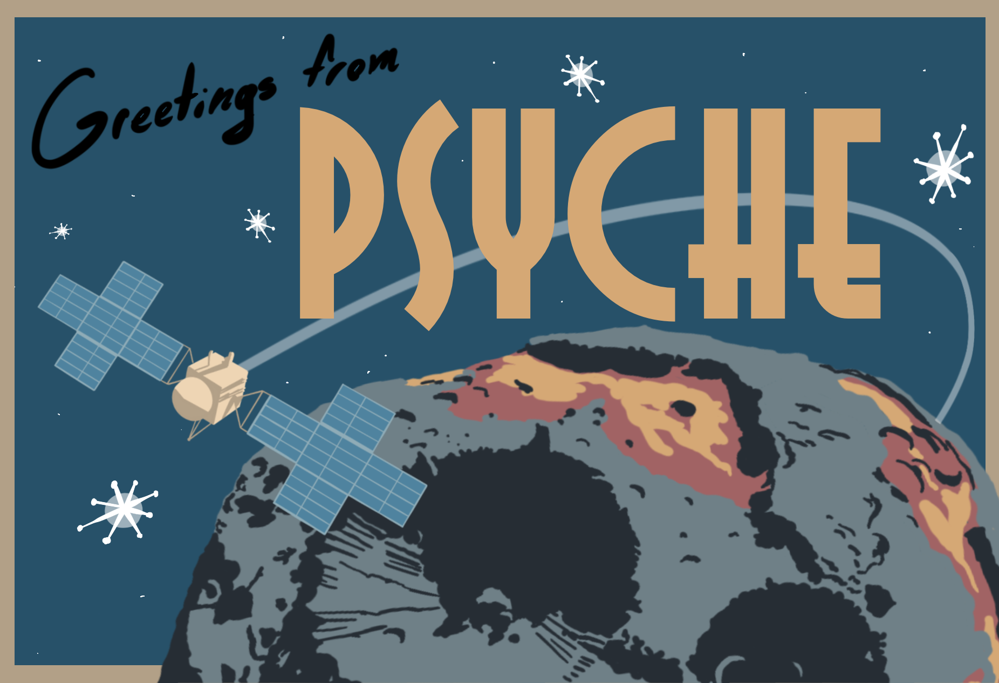
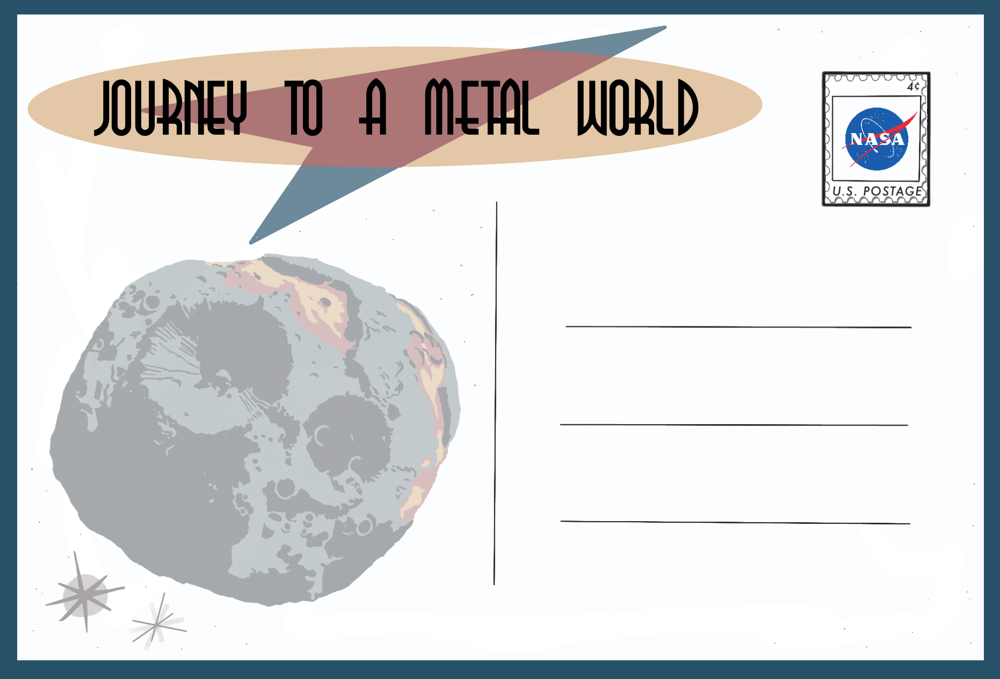
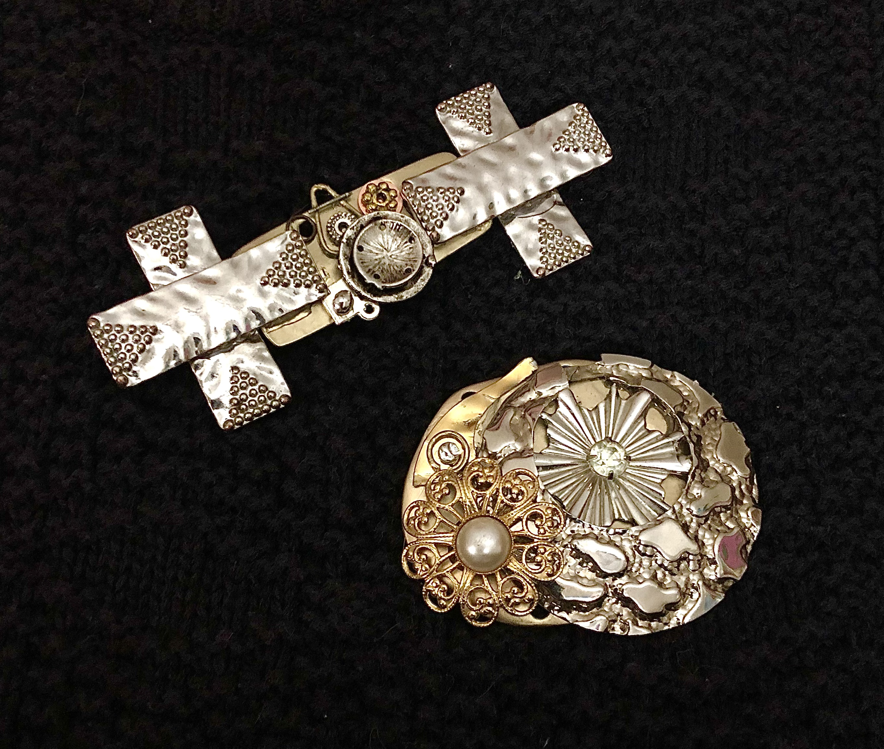

Pulling from the description on the Psyche Inspired webpage, "Psyche Inspired is a program that brings undergraduate students from any discipline or major together to share the excitement, innovation, and scientific and engineering content of NASA's Psyche mission with the public in new ways through artistic and creative works."
From my time as a Psyche Intern (Copper Class), I would describe the experience as one of the best opportunities for me to create artwork for the sake of creativity. What I mean by that is, since all the instruction they gave us towards our four projects was to "be inspired", us interns were tasked with navigating the boundlessness of creating.. basically whatever we wanted (as long as it was inspired by the mission, of course).
I saw this as an opportunity to explore different mediums within and outside of my comfort zone as an emerging graphic designer. At the time I was selected to participate in the program, I had just started my first semester of digital design courses at Boston University. I was beyond excited to weave what I was doing in the studio into my NASA projects, and even more excited to see where my inspirations would take me from there.
Greetings from PSYCHE
Digital Postcard Design • Adobe Illustrator • Procreate
When we leave home to explore a new or significant location far away, we often like to commemorate our journey or send a message home with a postcard. My project is a graphic design of a postcard that reads, “Greetings from PSYCHE,” and it is accompanied by a digital illustration of the asteroid and the spacecraft on its orbital mission. The backside features the quote, “JOURNEY TO A METAL WORLD”, along with an opaque illustration of the asteroid and some retro starburst decals. The concept behind the graphic style comes from the art movement Retro Futurism, a style originating from around the 1970s in depictions of 1950s America if it were heavily influenced by ambitious technologies of the future. Retro Futurism revolves around this idea of nostalgia within dreaming of what the world of tomorrow could be. Mostly inspired by Walt Disney's Tomorrowland concept, I wanted to carry Retro Futurism into my graphic language to express NASA's optimism and ambition for the Psyche mission while also being nostalgic of when space exploration was new to us.
View on the Psyche Inspired website


PSYCHE for Atari 2600
Video Game Product/Package Design • Adobe Illustrator • Procreate
Whether it be by human or by machine, the concept of space exploration has always felt like a miraculous fantasy to me. Psyche's “Journey to a Metal World” slogan captures this feeling perfectly: venturing off into the unknown, anticipating groundbreaking discoveries. This fantastical concept reminds me of how entire worlds can be generated by video games, more specifically, Atari games. The intricately detailed art on Atari 2600 cartridges inspire the player to fantasize the computer graphics into dynamic, visual realities beyond the pixels. For my project, I aimed to capture this concept into my own version of an Atari game titled “PSYCHE”. The visual on the cartridge box depicts Psyche bursting out of the frame, followed by an angular shot of the spacecraft on its orbital mission to study the asteroid. The cartridge label features this same visual, accompanied by an original Atari-style typeface describing how to play the game. Just as the original Star Wars movie posters of the 1970s and 80s, all Atari 2600 cartridge art was painted by hand. My cartridge label is designed in this motif, mimicking paint brush strokes in the background and utilizing realistic shading techniques on the spacecraft and in the asteroid's texture. The color palette I chose was inspired by bold tones found in 80s New Wave art, driving the idea of futurism into my interpretation of Psyche as an illusory experience.
View on the Psyche Inspired website

Jewelry Design • Upcycled Metal • Jewelry Making
The phrase “Journey to a Metal World” excites me about what waits for us to discover on Psyche. One of those things being metal, I wanted this project to feature the material in all of its repurposable glory. Using recycled pieces of metal jewelry, I have handcrafted two brooches inspired by the asteroid and the spacecraft of the Psyche mission. The Asteroid brooch features the two prominent craters mimicked by radial bursts of metal scraps, along with rocky-textured metal plates to mimic the surface of Psyche. The spacecraft uses rectangular metal scraps with smaller, more detailed beads and rods to mimic the instruments on the actual spacecraft.
View on the Psyche Inspired website
Mind and Soul
Jewelry Design • Upcycled Metal • Jewelry Making
The phrase “Journey to a Metal World” excites me about what waits for us to discover on Psyche. One of those things being metal, I wanted this project to feature the material in all of its repurposable glory. Using recycled pieces of metal jewelry, I have handcrafted two brooches inspired by the asteroid and the spacecraft of the Psyche mission. The Asteroid brooch features the two prominent craters mimicked by radial bursts of metal scraps, along with rocky-textured metal plates to mimic the surface of Psyche. The spacecraft uses rectangular metal scraps with smaller, more detailed beads and rods to mimic the instruments on the actual spacecraft.
View on the Psyche Inspired website